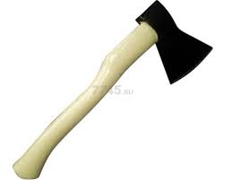

Топор универсальный "Лесной мастер"
Описание товара
Идеальный инструмент для рубки дров и хозяйственных работ!

Характеристики
| Длина: | 50 см |
| Вес: | 1.2 кг |
| Материал лезвия: | Углеродная сталь |
| Материал ручки: | Дерево |
| Тип: | Универсальный топор |
| Назначение: | Рубка дров, создание костровищ, садовые и хозяйственные работы |
| Эргономика: | Анатомическая форма ручки для надежного хвата |
| Дизайн: | Современный и стильный внешний вид |
| Компактность: | Легкий и удобный для переноски в походах и на даче |
Подробное описание
Познакомьтесь с нашим универсальным топором "Лесной мастер" — незаменимым инструментом для любителей активного отдыха, дачников и профессионалов. Этот топор сочетает в себе прочность, функциональность и эргономичный дизайн, что делает его идеальным выбором для рубки дров, строительства и различных хозяйственных работ. Особенности: Лезвие из высококачественной стали: Топор оснащен прочным лезвием, которое обеспечивает отличную резку и долговечность. Специальная закалка гарантирует, что он не потеряет остроту даже после длительного использования. Эргономичная ручка: Ручка выполнена из прочного дерева и имеет анатомическую форму, что обеспечивает надежный хват и комфорт при работе. Специальное покрытие предотвращает скольжение даже в условиях повышенной влажности. Легкий и компактный: Благодаря оптимальному весу и размеру, топор легко переносить и использовать в любых условиях — будь то поход в лес или работа на даче. Многофункциональность: Идеален для рубки дров, создания костровищ, строительства временных конструкций и даже для работы в саду. Стильный дизайн: Топор имеет современный и привлекательный внешний вид, что делает его не только полезным инструментом, но и стильным аксессуаром.
Преимущества: Высокая прочность и долговечность Удобство в использовании Подходит как для профессионалов, так и для любителей Отличный подарок для ценителей активного отдыха и природы